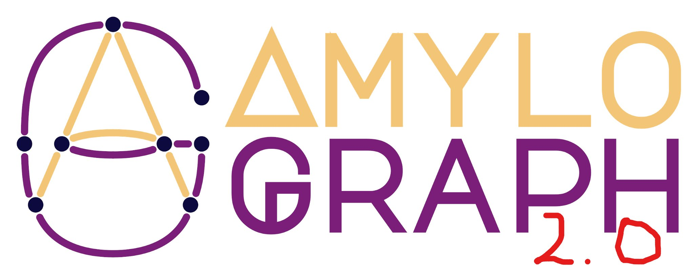

Big annoucement!
About the Project
Amyloids are proteins implicated in numerous serious diseases, including Alzheimer’s, Parkinson’s, Creutzfeldt-Jakob’s disease, and type 2 diabetes. These proteins are known for their ability to self-aggregate into unique supramolecular fibrils, a process that plays a critical role in disease progression.
Our team has previously developed AmyloGraph, database of amyloid interactions, which you can explore here. In this new phase of our research, we aim to take AmyloGraph to the next level. We will design and implement machine learning-based tools to analyze the data more effectively and revamp the user interface to make it easier for researchers to access the latest information.
But that’s not all. The data collected during this project will be used to train predictive models, with the ultimate goal of designing new chemical compounds that can inhibit amyloid self-aggregation. These compounds hold great promise for the treatment of various amyloid-related diseases.
Details
Employment conditions
Place: Remotely or at Bioinformatics and Multiomics Analyses Laboratory, Clinical Research Centre, Medical University of Białystok, Poland
Scholarship/salary: 2500 PLN per month (tax-free for students under 26 yo)
Planned start date for project work: 01.10.2024
Important dates
Submission deadline: 06.09.2024, 15:00 (GMT+2)
Interviews (Google Meet): 16-17.09.2024
Tasks and skills
student 1
Tasks:
- Automating the search for new sources of information.
- Developing tools for automated data validation.
- Creating tools for automated data acquisition from new sources.
- Designing and implementing a new version of the AmyloGraph database.
- Implementing the new version of the AmyloGraph database.
- Training and conducting a comparative analysis of the prediction model for modulators.
- Implementing generative models for designing small molecules.
Skills:
- Proficiency in designing machine learning models.
- Experience in creating and implementing databases.
- Advanced knowledge of the R language, particularly within the tidyverse environment and the Shiny package.
- Knowledge of Python and JavaScript is an advantage.
- Familiarity with version control systems.
- Strong teamwork skills and motivation to conduct research.
student 2
Tasks:
- Expanded maintenance of existing data sources.
- Data curation from new sources for the AmyloGraph database.
- Designing existing databases.
- Designing and creating a system for browsing databases of small molecular compounds.
- Training and conducting a comparative analysis of the prediction model for modulators.
Skills:
- Expertise in verifying biological data and data management.
- Knowledge of amyloid aggregation and methods for testing it.
- Proficiency in topology and network analysis.
- Experience with methods of biological data processing in machine learning models, particularly for small molecular compounds and proteins.
- Advanced proficiency in the R language, especially within the tidyverse environment and Shiny package.
- Familiarity with the TeX language.
- Ability to work with version control systems.
- Strong teamwork skills and motivation to conduct research.
- Very good command of English, both written and oral.
Don’t worry if you don’t have all the required skills—if you’re eager to learn, don’t hesitate to apply!
How to apply
Submit your:
- cover letter
- CV
- proof of student status (can be sent at the start of scholarship)
- signed GDPR consent form
to michal.burdukiewicz@umb.edu.pl with the subject line: “Scholarship holder in project no. 2023/51/D/NZ7/02847”.
More detailed info about requirements and needed documents: student 1, student 2
